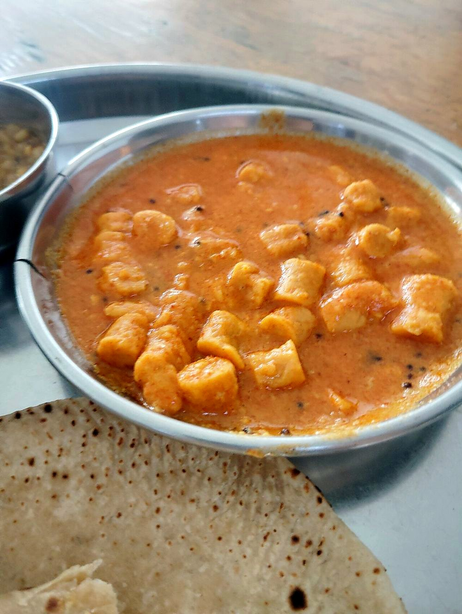

Gatta Pulao
basmati layered with fried besan dumplings and whole spices, a marwari one-pot

Contains: milk
Ingredients
Quantities for 4.
- 300g, rinsed and soaked 30 minutes Basmati Rice
- 150g, sieved Besan
- 2 tbsp thick Yogurtbinds the gatta dough
- 1/2 tsp Ajwain
- 4 tbsp Neutral Oil1 in the dough, 3 for frying the gatte
- 3 tbsp Ghee
- 1 tsp Cumin Seeds
- 2 Bay Leafoptional
- 4 Clovesoptional
- 1 piece, 3cm Cinnamonoptional
- 1 Black Cardamomoptional
- 1 large, thinly sliced Onion
- 2, slit Green Chilli
- 1 tbsp, julienned Ginger
- 3/4 tsp Turmericsplit between dough and rice
- 1 tsp Chilli Powder
- 1.5 tsp Coriander Powder
- 1/2 tsp Garam Masalaoptional
- 3 tbsp, chopped Coriander Leavesoptional
- 1/2, juiced Lemonoptional
- to taste Salt
- 1 litre for boiling the gatte, plus 550ml for the rice Water
Cookware
stovetop, kadhai
Checked against the ingredient list for ten allergens: milk, egg, fish, crustaceans, tree nuts, peanuts, sesame, mustard, soy and gluten. Brands vary, so read the label on anything new to you.
Before you start
- Soak the rice 30 minutes and drain it well. Wet rice steams unevenly and the grains break when you fold in the gatte.
- Make and fry the gatte first, before anything else goes on the stove. They need to be cool enough to handle when you cut them.
- Measure the water for the rice by volume against the drained rice: a shade under 2 parts water to 1 part rice, since the gatte give off none.
Method
- Rub the besan with 1 tbsp oil, the yogurt, ajwain, 1/4 tsp turmeric, half the chilli powder and salt, then knead into a stiff dough with a splash of water. Rest 10 minutes.
- Roll into 3 ropes about 1.5cm thick and drop them into 1 litre of boiling salted water. Boil 10 minutes until they float and feel firm. Lift out, cool, and cut into 2cm pieces.Boil, do not simmer. A slack boil leaves the centres pasty.
- Fry the pieces in 3 tbsp oil over medium heat until golden on all sides, about 5 minutes. Drain and set aside.
- In a heavy pot heat the ghee and add the cumin, bay leaf, cloves, cinnamon and black cardamom. Wait for the cumin to darken and the spices to smell sweet, about 30 seconds.
- Add the sliced onion and fry 8 minutes on medium until evenly golden brown at the edges.Golden, not brown-black. Burnt onion turns the whole pot bitter and there is no hiding it in a pulao.
- Add the ginger and green chilli, fry 1 minute, then the remaining turmeric, chilli powder and coriander powder with 2 tbsp water. Cook 2 minutes.
- Tip in the drained rice and turn it gently in the masala for 2 minutes until every grain is coated and looks glassy at the edges.Use a flat spatula and fold rather than stir, or you will snap the grains.
- Add 550ml hot water and salt. Bring to a rolling boil, then scatter the fried gatte over the top without stirring them in.
- Cover tightly, drop to the lowest heat and cook 12 minutes. Do not lift the lid.
- Rest off the heat, still covered, 10 minutes. Then fold through the coriander, garam masala and lemon juice with a fork.
Storage
Keeps 2 days refrigerated. Reheat covered with 2 tbsp water sprinkled over, on low or in a steamer, so the rice does not dry out. Freezes poorly. The gatte go spongy.
Nutrition Medium estimate
Medium protein: 15 g a serving, 9% of the calories
| Per serving453 g | Per 100 g | |
|---|---|---|
| Calories | 662 kcal | 147 kcal |
| Protein | 15.3 g | 3 g |
| Carbohydrate | 89.0 g | 20 g |
| of which sugars | 6.5 g | 1 g |
| Fibre | 7.1 g | 2 g |
| Fat | 27.1 g | 6 g |
| of which saturated | 8.0 g | 2 g |
| of which unsaturated | 17.2 g | 4 g |
Ingredients given to taste count as zero, so the real figures run a little higher. Nearest database match used for garam masala. Estimated from raw ingredients using USDA FoodData Central.
More like this: Vegetarian Indian recipes · Gluten-free Indian recipes · Rajasthani recipes
Times, yields, allergens and nutrition are guidance. Use your own judgement on doneness and on storing. More in About.